7 虛擬刀房- 進階使用說明
- 進階使用說明VTR資料夾組成、切削力資料檔說明、與整合應用等。而整合應用則包含訊息交握、整合介面範例與加工履歷範例等，分述如下。
VTR資料夾組成
| VTR : 虛擬刀房 STH : 智慧刀把 | VTR : 虛擬刀房 STH : 智慧刀把 | VTR : 虛擬刀房 STH : 智慧刀把 | VTR : 虛擬刀房 STH : 智慧刀把 |
|---|---|---|---|
| 根目錄c:\VTR | 根目錄c:\VTR | 根目錄c:\VTR | 根目錄c:\VTR |
| c:\VTR中的應用程式檔 | c:\VTR中的應用程式檔 | c:\VTR中的應用程式檔 | c:\VTR中的應用程式檔 |
| InitSTH.py | 可執行檔DataProcess和STHLink的參數初始值 | 可執行檔DataProcess和STHLink的參數初始值 | 可執行檔DataProcess和STHLink的參數初始值 |
| InitSTH_u.json | 透過UI介面更新的InitSTH.py參數，如連線檢查 | 透過UI介面更新的InitSTH.py參數，如連線檢查 | 透過UI介面更新的InitSTH.py參數，如連線檢查 |
| STHScan.exe | 掃描並設定STH網路，如LOAD STHSCAN(載入STH掃描程序) | 掃描並設定STH網路，如LOAD STHSCAN(載入STH掃描程序) | 掃描並設定STH網路，如LOAD STHSCAN(載入STH掃描程序) |
| STHLink.exe | 與STH連結並建立連線 | 與STH連結並建立連線 | 與STH連結並建立連線 |
| STHComm.exe | 與STH連線的主程式，如LOAD ALL(載入所有) | 與STH連線的主程式，如LOAD ALL(載入所有) | 與STH連線的主程式，如LOAD ALL(載入所有) |
| DataProcess.exe | 將感測到的原始資料位置(RawData\Source\Data\.txt)處理為受力資料(RawData\Output\.csv) | 將感測到的原始資料位置(RawData\Source\Data\.txt)處理為受力資料(RawData\Output\.csv) | 將感測到的原始資料位置(RawData\Source\Data\.txt)處理為受力資料(RawData\Output\.csv) |
| c:\VTR中的子資料夾 | c:\VTR中的子資料夾 | c:\VTR中的子資料夾 | c:\VTR中的子資料夾 |
| .\Libray | 用於特定功能的函式庫 | 用於特定功能的函式庫 | 用於特定功能的函式庫 |
| .\Logs | Node-red和STHLink產生的錯誤日誌文件 | Node-red和STHLink產生的錯誤日誌文件 | Node-red和STHLink產生的錯誤日誌文件 |
| .\Node-red | 使用者流程和系統設定文件 | 使用者流程和系統設定文件 | 使用者流程和系統設定文件 |
| .\Plans | Node-red使用的生產或實驗計畫(YAML or JSON) | Node-red使用的生產或實驗計畫(YAML or JSON) | Node-red使用的生產或實驗計畫(YAML or JSON) |
| .\RawData | STHLink收集的原始資料，透過DataProcess.exe處理 | STHLink收集的原始資料，透過DataProcess.exe處理 | STHLink收集的原始資料，透過DataProcess.exe處理 |
| .\Reports | Node-red使用的yaml計畫相關數據報告 | Node-red使用的yaml計畫相關數據報告 | Node-red使用的yaml計畫相關數據報告 |
| .\Simuation | HiNC使用的yaml計畫相關模擬CSV文件 | HiNC使用的yaml計畫相關模擬CSV文件 | HiNC使用的yaml計畫相關模擬CSV文件 |
| Library資料夾中的文件 | Library資料夾中的文件 | Library資料夾中的文件 | Library資料夾中的文件 |
| MergeFile.exe | 合併資料夾中檔案的執行函數 | 合併資料夾中檔案的執行函數 | 合併資料夾中檔案的執行函數 |
| Logs資料夾中的文件 | Logs資料夾中的文件 | Logs資料夾中的文件 | Logs資料夾中的文件 |
| STHerror.txt | STHLink記錄的錯誤日誌 | STHLink記錄的錯誤日誌 | STHLink記錄的錯誤日誌 |
| msg_log (MM-dd mm-ss) | Node-red收集的MQTT訊息 | Node-red收集的MQTT訊息 | Node-red收集的MQTT訊息 |
| NodeRed資料夾中的文件 | NodeRed資料夾中的文件 | NodeRed資料夾中的文件 | NodeRed資料夾中的文件 |
| setting.js | setting.js | Node-red的設定文件 | Node-red的設定文件 |
| VTR-flows (yyyyMMv) | VTR-flows (yyyyMMv) | Node-red的流程節點 | Node-red的流程節點 |
| .\YYYYMMv | .\YYYYMMv | Node-red的個別流程 | Node-red的個別流程 |
| .\Medium | .\Medium | Node-red的圖片檔案 | Node-red的圖片檔案 |
| Plans資料夾中的文件，如創建與更新計畫 | Plans資料夾中的文件，如創建與更新計畫 | Plans資料夾中的文件，如創建與更新計畫 | Plans資料夾中的文件，如創建與更新計畫 |
| LL-FR-A-MC-ID-IP-YYMMDD-setup-.yml | LL-FR-A-MC-ID-IP-YYMMDD-setup-.yml | LL-FR-A-MC-ID-IP-YYMMDD-setup-.yml | yaml格式的生產計畫 |
| LL-FR-A-MC-ID-IP-YYMMDD-setup-.json | LL-FR-A-MC-ID-IP-YYMMDD-setup-.json | LL-FR-A-MC-ID-IP-YYMMDD-setup-.json | Json 格式的生產計畫 |
| RawData 資料夾中的文件，如儲存設定 | RawData 資料夾中的文件，如儲存設定 | RawData 資料夾中的文件，如儲存設定 | RawData 資料夾中的文件，如儲存設定 |
| .\Source | .\Source | 儲存STHLink收集的原始資料(.txt)來源資料夾 | 儲存STHLink收集的原始資料(.txt)來源資料夾 |
| .\Data | .\Data | ||
| .\(YYYY-MM-DD-hh-mm) | .\(YYYY-MM-DD-hh-mm) | ||
| *.txt | *.txt | 原始txt文件 | 原始txt文件 |
| .\Output | .\Output | 儲存Source/Data處理後的csv文件輸出資料夾 | 儲存Source/Data處理後的csv文件輸出資料夾 |
| .\(YYYYMMDDhh) | .\(YYYYMMDDhh) | 資料夾中的記錄時間 | 資料夾中的記錄時間 |
| *.csv | *.csv | 解析後的csv文件 | 解析後的csv文件 |
| (YYYYMMDDhh)merged.csv | (YYYYMMDDhh)merged.csv | 按資料夾合併後的csv文件 | 按資料夾合併後的csv文件 |
| .\Coefficient | .\Coefficient | 儲存校正系數的資料夾，如校正系數設定 | 儲存校正系數的資料夾，如校正系數設定 |
| AvailableSTH.csv | AvailableSTH.csv | 可使用的STH係數文件 | 可使用的STH係數文件 |
| Report資料夾中的文件 | Report資料夾中的文件 | Report資料夾中的文件 | Report資料夾中的文件 |
| Simulation資料夾中的文件 | Simulation資料夾中的文件 | Simulation資料夾中的文件 | Simulation資料夾中的文件 |
| .\NCfile | .\NCfile | ||
| sim_part_YYYMMddV.csv | sim_part_YYYMMddV.csv | 模擬數據 | 模擬數據 |
設定檔案
| Node-red的設定，如setting.js |
|---|
| In setting.js / flowFile: 'vtr_flows(YYYYMMDDV).json', / functionGlobalContext: { / fs: require('fs'), / csv: require('csv-parser'), / path: require('path'), / async: require('async'), / yaml: require('js-yaml'), / os:require('os') / }, |
預設路徑整理
| 項目 | 預設位置 | 說明 | |
|---|---|---|---|
| 1 | VTR 根目錄 | C:\VTR | 虛擬刀房根目錄 |
| 2 | 原始數據預設儲存位置 | C:\VTR\RawData\Source\Data\*.txt | 儲存感測到的原始 TXT 資料 |
| 3 | 解析後 CSV 預設儲存位置 | C:\VTR\RawData\Output\*.csv | 儲存解析後的 CSV 資料 |
| 4 | 日誌檔預設儲存位置 | C:\VTR\Logs\ | 儲存錯誤日誌與訊息紀錄 |
切削力資料檔
RawData \Output\資料夾中的文件
| 解析後CSV文件中的數據，如*.csv | 解析後CSV文件中的數據，如*.csv |
|---|---|
| TimeTag | 時間標籤(sec) |
| CH1 | 應變規通道1訊號 |
| CH2 | 應變規通道2訊號 |
| BendingX | X方向彎曲力(Nm) |
| BendingY | Y方向彎曲力(Nm) |
| Torque | 扭矩(Nm) |
| CH1和CH2畫成散佈圖可表示為四刃刀的刃形圖 | CH1和CH2畫成散佈圖可表示為四刃刀的刃形圖 |
 |
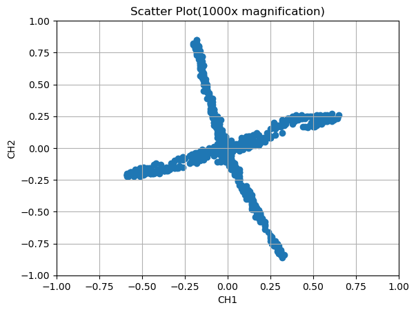 |
| BendingX畫成折線圖可見X方向的受力變化 | BendingX畫成折線圖可見X方向的受力變化 |
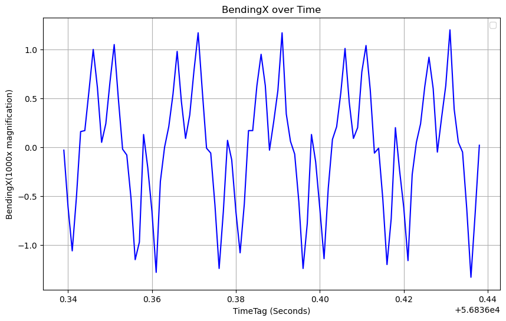 |
 |
整合與應用
訊息交握方式
- RPi/OT會發佈資訊到MQTT Broker，總共分類成四種Topic，接著Edge/IT會訂閱Broker裡面的Topic接收資訊，反之則是Edge/IT發佈到Topic: CMD/REQ，RPI/OT再去訂閱訊息，如圖 112、訊息交握架構圖所示，Topic的欄位定義如圖 113、CMD_REQ-JSON欄位定義、圖 114、CMD/RESP-JSON欄位定義、圖 115、CMD/NOTIFY-JSON欄位定義、圖 116、STH/Pdata-JSON欄位定義、圖 117、STH/FILE-JSON欄位定義和說明。
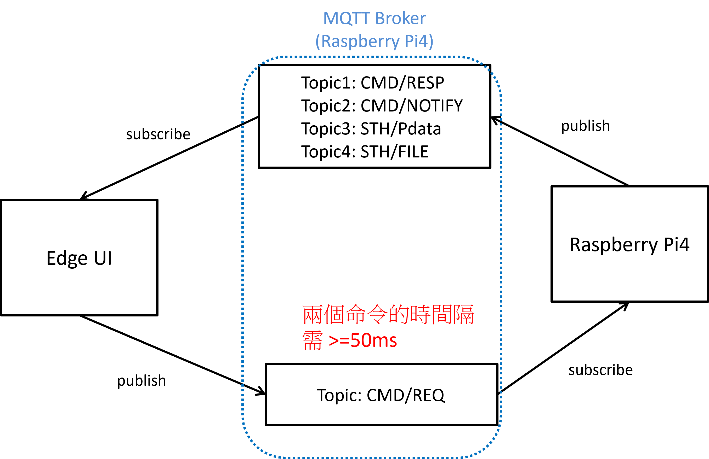
- 圖 112、訊息交握架構圖
Topic: CMD/REQ (Edge送出命令)
- 從Edge/IT送出之命令(CMD/REQ)後，Pi將根據命令回應(CMD/RESP)。
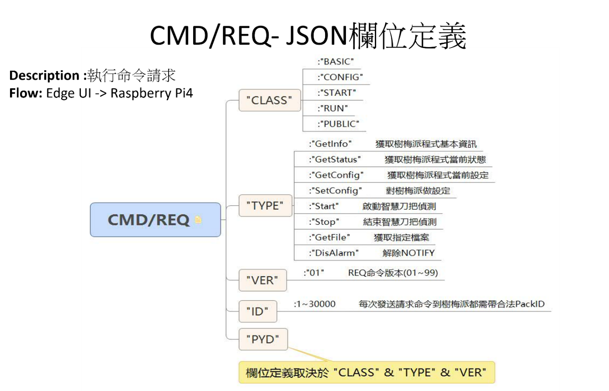
- 圖 113、CMD_REQ-JSON欄位定義
Topic 1: 執行命令之結果CMD/RESP
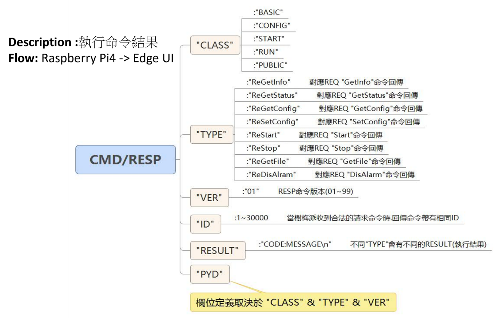
- 圖 114、CMD/RESP-JSON欄位定義
Topic 2: 主動通知CMD/NOTIFY
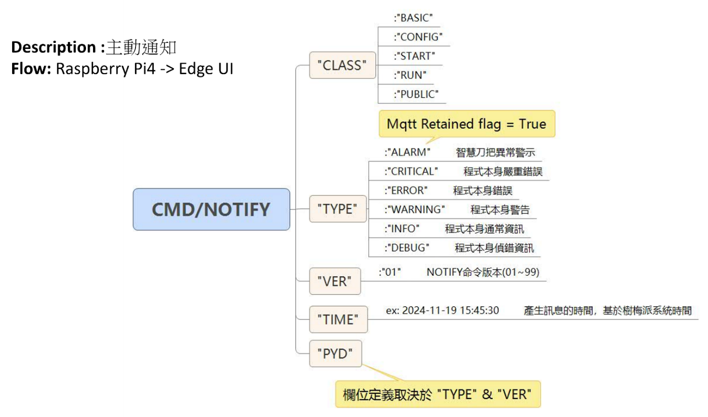
- 圖 115、CMD/NOTIFY-JSON欄位定義
Topic 3: 主動回報即時感測資料 STH/Pdata
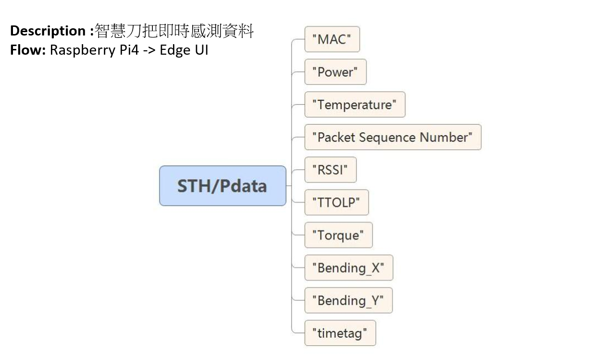
- 圖 116、STH/Pdata-JSON欄位定義
Topic 4: 檔案傳輸 STH/FILE
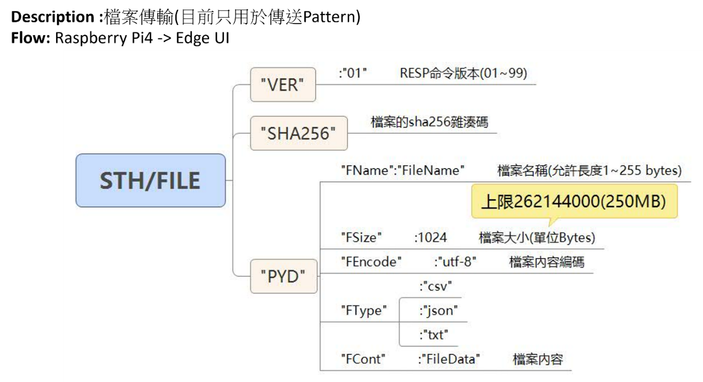
-
圖 117、STH/FILE-JSON欄位定義
-
根據上述訊息格式定義，進一步串接可構成不同形況下的流程，分別為標準開機、Monitor偵測、與Reference偵測流程等。其中，標準開機為開機時，Edge可據以獲知與之連線的STH Mac等基本之資訊，並可與之進行時間同步。
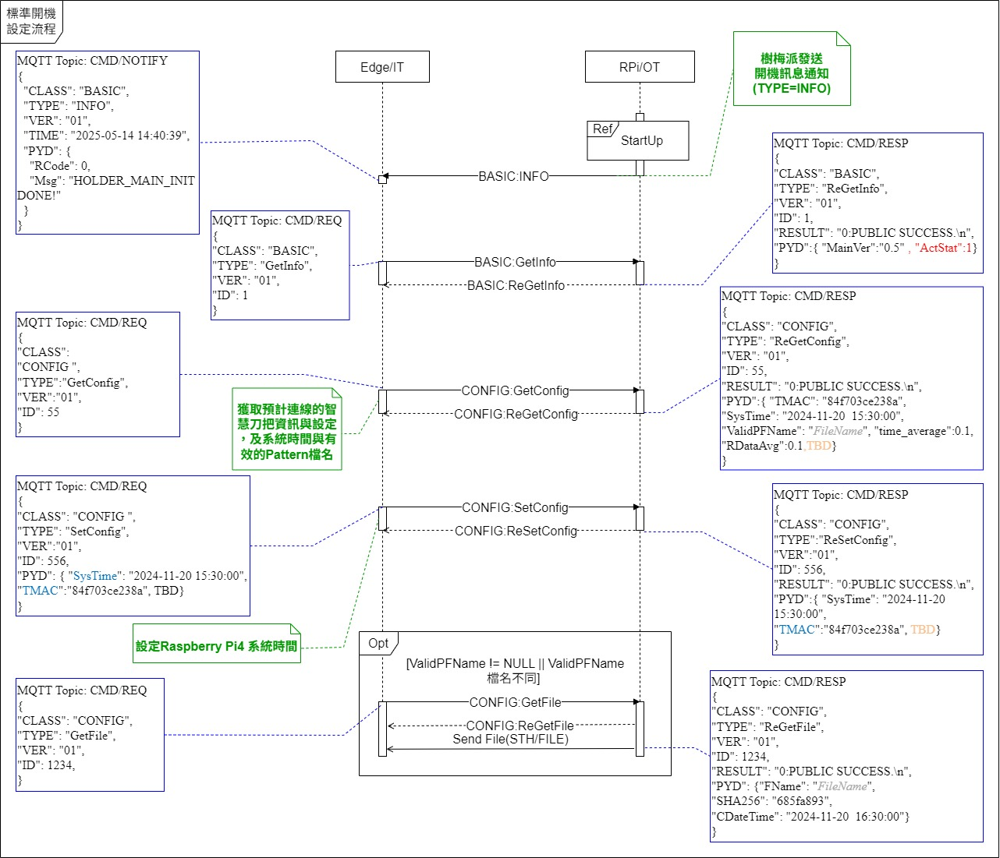
-
圖 118、標準開機流程時序圖
-
在Monitor偵測流程中，Edge可啟動、蒐集、與停止STH，並可獲得如斷刀的通知。
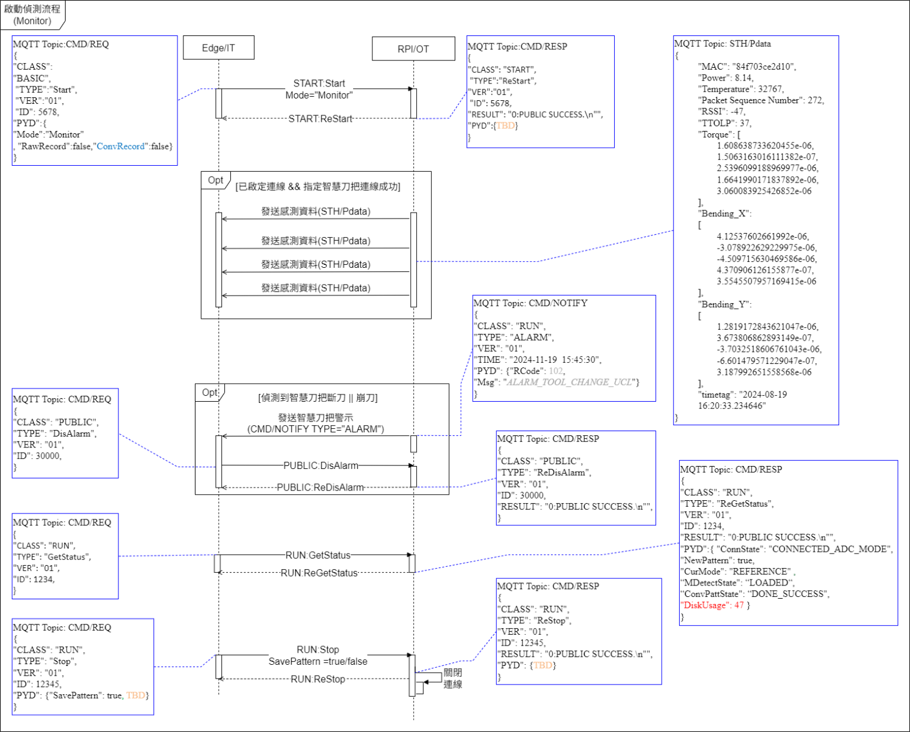
-
圖 119、Monitor偵測流程時序圖
-
在Reference流程中，Edge可啟動、接收、與停止，其中Pattern為用以啟動或停止比對訊號正常與否。
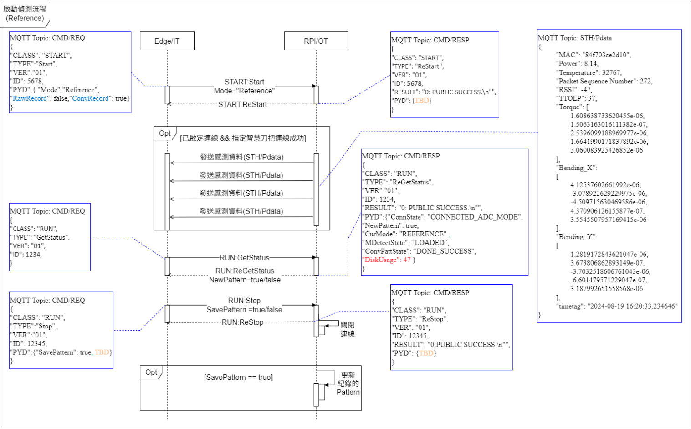
- 圖 120、Reference偵測流程時序圖
整合介面範例
- 首先會將STH、SIM (模擬) 和CTL (控制器) 三者的CSV資料，使用DTW (Dynamic Time Warping) 方法，先對STH的Torque欄位和SIM的IsTouched欄位進行扭矩同步，將結果儲存至Torque_Sync.csv，如圖 121、Torque_Sync.csv欄位資料，接著加上CTL的Times和Offset Coordinates欄位時間同步，結果會儲存至Time_Sync.csv如圖 122、Time_Sync.csv欄位資料，最後會將同步結果透過WebSocket傳送給前端將資料顯示於網址如圖 124、STH和CNC整合顯示畫面。
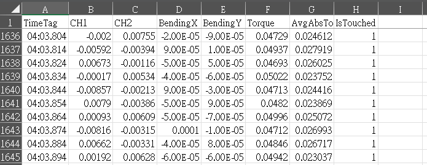
圖 121、Torque_Sync.csv欄位資料
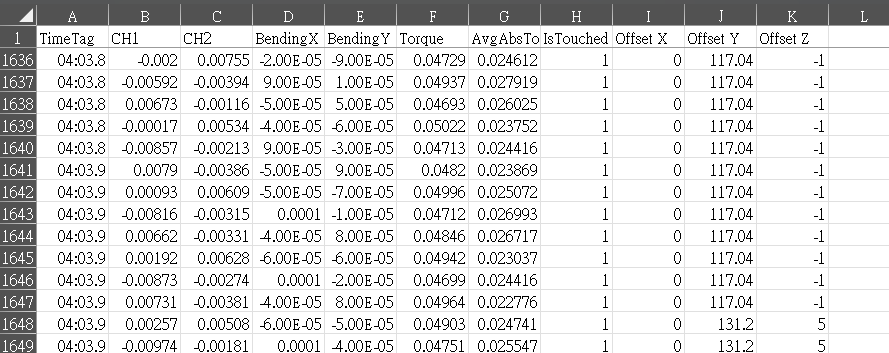
圖 122、Time_Sync.csv欄位資料
- CTL說明: 透過Fanuc Focas2 API連結Fanuc控制器讀取CNC的檔案名稱、G54座標和絕對座標等資訊，最後將結果儲存成CSV，讀取資訊所引用的API如表 12、Focas2函數說明。
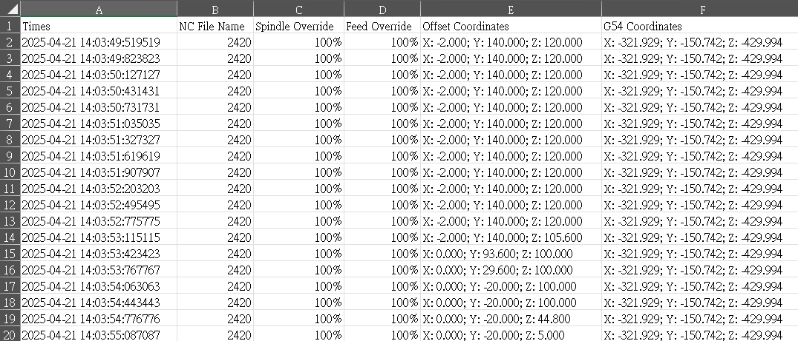
圖 123、CTL的檔案欄位資料
表 12、Focas2函數說明
| 編號 | 讀取功能 | 引用函數 |
|---|---|---|
| 1 | NC程式名稱 | FWLIBAPI short WINAPI cnc_rdprgnum(unsigned short FlibHndl, ODBPRO *prgnum); |
| 2 | 指定軸的絕對座標位置 | FWLIBAPI short WINAPI cnc_absolute(unsigned short FlibHndl, short axis, short length, ODBAXIS *absolute ); |
| 3 | 指定編號和軸的工件零點偏移值(G54) | FWLIBAPI short WINAPI cnc_rdzofs(unsigned short FlibHndl, short number, short axis, short length, IODBZOFS *zofs); |
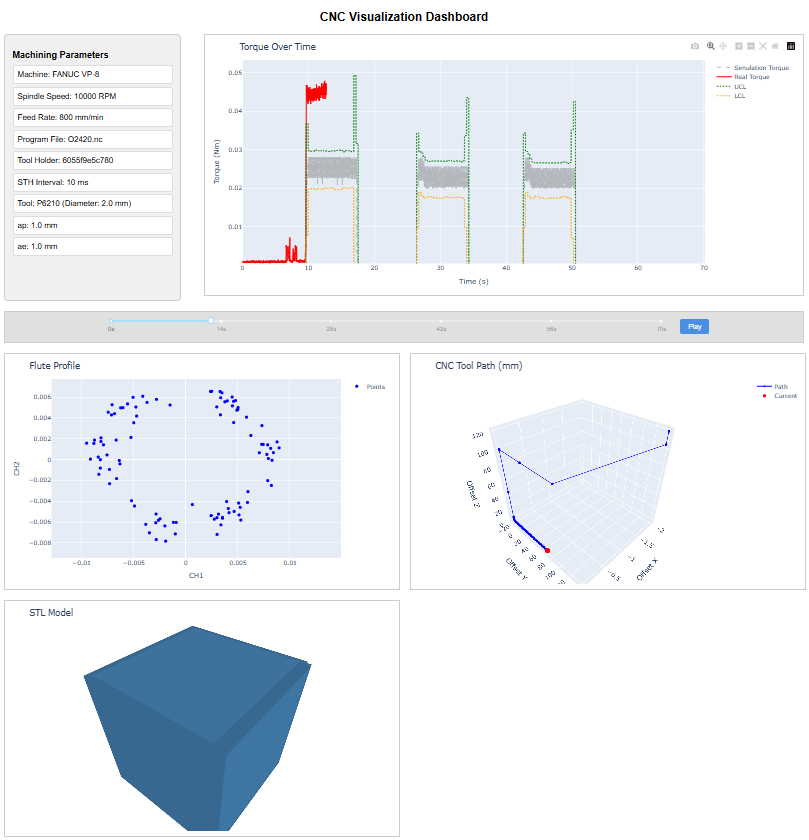
圖 124、STH和CNC整合顯示畫面
-
Machining Parameters: 讀取config.json中的參數，顯示此次加工參數有Machine (工具機名稱)、Spindle Speed (主軸轉速)、Feed Rate (進給速率)、Program File (NC檔案名稱)、Tool Holder (刀把編號)、STH Interval (資料平均時間)、Tool(刀具名稱)、ap (切削深度)、ae (切削寬度)。
-
Torque Over Time: 橫軸為加工時間Time(s) 縱軸為Torque(Nm)，圖表中顯示灰色虛線Simulation Torque為模擬的扭矩，紅色實線Real Torque為STH所提供的真實扭矩，綠色與橘色虛線UCL、LCL分別代表以模擬扭矩為基準的上下管制界線。
-
Flute Profile: 橫軸為CH1 縱軸為CH2，每次使用100筆資料顯示點，可以表示當下加工的刃形圖。
-
CNC Tool Path (mm): 顯示CNC的座標位置，可以觀察到加工時的路徑變化。
-
STL Model: 顯示模擬的加工後工件STL檔案。